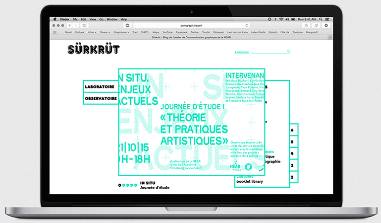
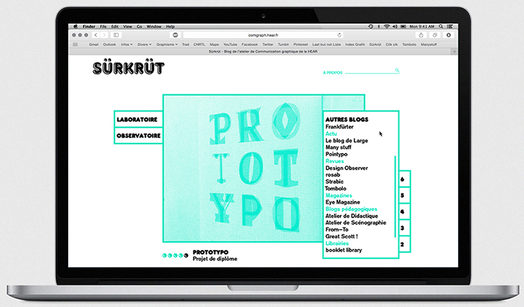
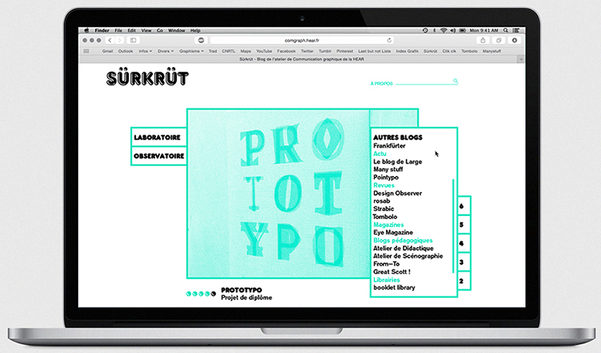
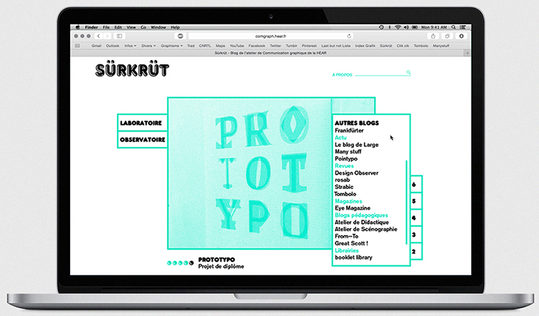
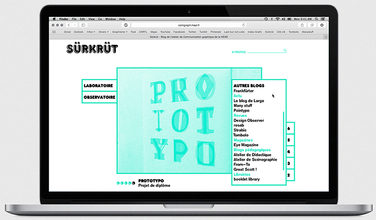

Sürkrüt
Refonte du blog de la section de communication graphique de la HEAR de Strasbourg.
(travail en cours) 2016

 




Refonte du blog de la section de communication graphique de la HEAR de Strasbourg.
(travail en cours) 2016
